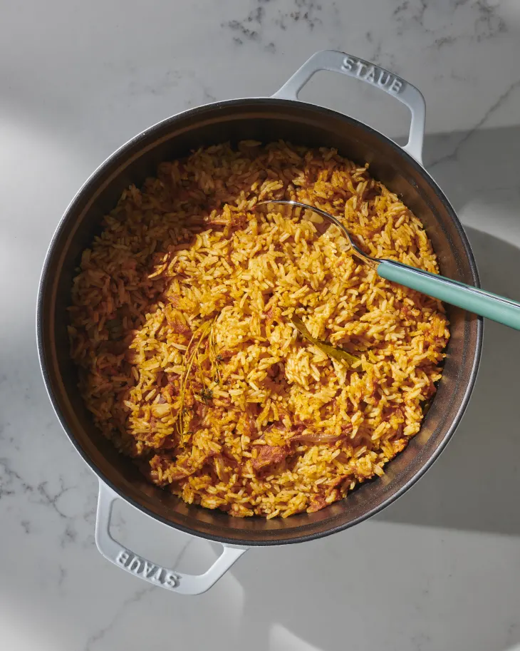

Jollof Rice

For those of you who aren’t familiar with Jollof Rice (Jellof rice) —it is
a rich and incredibly rich, aromatic, tasty West African one-pot Meal.
It’s similar to Jambalaya but with distinctive African spices. It consists
mainly of cooked rice and tomato stew flavored with spices such as thyme,
scotch bonnet pepper, onions, and garlic. The dish is a staple of West
African cuisine, particularly that of Ghana, Nigeria, Senegal, and Gambia
often eaten and enjoyed during holidays, weddings, birthdays, and other
special events. It is a very versatile dish, and it is usually made from
scratch using rice, tomatoes, pimento peppers, tomato paste, scotch
bonnet, onions, salt, and other spices.
Jollof rice is a delicious royal dish originating in West Africa. It is
one of the most common West African dishes eaten in the regions of
Nigeria, Ghana, Togo, Senegal, Gambia, Mali, Sierra Leone, Ivory Coast,
Cameroun, and Liberia. Although it is believed to have originated from the
Wolof people in northwestern Senegal. The recipe varies from country to
country, region to region of the continent, but it always starts with a
tomato base.
- 1/2. large red onion (6 to 7 ounces)
- 4 cups. uncooked jasmine or basmati rice.
- vegetable oil
- 3 tablespoons curry powder
- 4 sprigs
- 1 teaspoon dried thyme
- 1 teaspoon ground white pepper
- 1 teaspoon kosher salt, plus more as needed